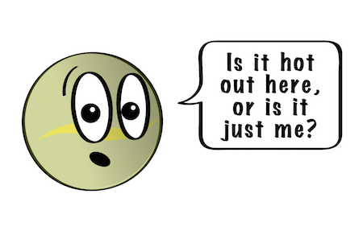
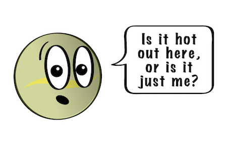

All about Mars:
Mars is a cold desert world. It is half the size of Earth. Mars is sometimes called the Red Planet. It's red because of rusty iron in the ground
Like Earth, Mars has seasons, polar ice caps, volcanoes, canyons, and weather. It has a very thin atmosphere made of carbon dioxide, nitrogen, and argon.
There are signs of ancient floods on Mars, but now water mostly exists in icy dirt and thin clouds. On some Martian hillsides, there is evidence of liquid salty water in the ground.
Scientists want to know if Mars may have had living things in the past. They also want to know if Mars could support life now or in the future.

All about Mercury
Mercury is the smallest planet in our solar system. It’s just a little bigger than Earth’s moon. It is the closest planet to the sun, but it’s actually not the hottest. Venus is hotter.
Along with Venus, Earth, and Mars, Mercury is one of the rocky planets. It has a solid surface that is covered with craters. It has no atmosphere, and it doesn’t have any moons. Mercury likes to keep things simple.
This small planet spins around slowly compared to Earth, so one day lasts a long time. Mercury takes 59 Earth days to make one full rotation. A year on Mercury goes by fast. Because it’s the closest planet to the sun, it doesn’t take very long to go all the way around. It completes one revolution around the sun in just 88 Earth days. If you lived on Mercury, you’d have a birthday every three months!
A day on Mercury is not like a day here on Earth. For us, the sun rises and sets each and every day. Because Mercury has a slow spin and short year, it takes a long time for the sun to rise and set there. Mercury only has one sunrise every 180 Earth days! Isn't that weird?

All about Earth
Our home planet Earth is a rocky, terrestrial planet. It has a solid and active surface with mountains, valleys, canyons, plains and so much more. Earth is special because it is an ocean planet. Water covers 70% of Earth's surface.
Our atmosphere is made mostly of nitrogen and has plenty of oxygen for us to breathe. The atmosphere also protects us from incoming meteoroids, most of which break up in our atmosphere before they can strike the surface as meteorites.
Since we live here, you might think we know all there is to know about Earth. Not at all, actually! We have a lot we can learn about our home planet. Right now, there are many satellites orbiting Earth taking pictures and measurements. This is how we can learn more about weather, oceans, soil, climate change, and many other important topics.

All about Jupiter
Jupiter is the biggest planet in our solar system. It's similar to a star, but it never got massive enough to start burning. It is covered in swirling cloud stripes. It has big storms like the Great Red Spot, which has been going for hundreds of years. Jupiter is a gas giant and doesn't have a solid surface, but it may have a solid inner core about the size of Earth. Jupiter also has rings, but they're too faint to see very well.
All about saturn
Saturn isn’t the only planet to have rings, but it definitely has the most beautiful ones. The rings we see are made of groups of tiny ringlets that surround Saturn. They’re made of chunks of ice and rock. Like Jupiter, Saturn is mostly a ball of hydrogen and helium.
When Galileo Galilei saw Saturn through a telescope in the 1600s, he wasn't sure what he was seeing. At first he thought he was looking at three planets, or a planet with handles. Now we know those "handles" turned out to be the rings of Saturn.
All about Venus
Even though Venus isn't the closest planet to the Sun, it is still the hottest. It has a thick atmosphere full of the greenhouse gas carbon dioxide and clouds made of sulfuric acid. The gas traps heat and keeps Venus toasty warm. In fact, it's so hot on Venus, metals like lead would be puddles of melted liquid.
Venus looks like a very active planet. It has mountains and volcanoes. Venus is similar in size to Earth. Earth is just a little bit bigger.
Venus is unusual because it spins the opposite direction of Earth and most other planets. And its rotation is very slow. It takes about 243 Earth days to spin around just once. Because it's so close to the Sun, a year goes by fast. It takes 225 Earth days for Venus to go all the way around the Sun. That means that a day on Venus is a little longer than a year on Venus.
Since the day and year lengths are similar, one day on Venus is not like a day on Earth. Here, the Sun rises and sets once each day. But on Venus, the Sun rises every 117 Earth days. That means the Sun rises two times during each year on Venus, even though it is still the same day on Venus! And because Venus rotates backwards, the Sun rises in the west and sets in the east.
Just like Mercury, Venus doesn't have any moons.
 

All about Neptune
Neptune is dark, cold, and very windy. It's the last of the planets in our solar system. It's more than 30 times as far from the sun as Earth is. Neptune is very similar to Uranus. It's made of a thick fog of water, ammonia, and methane over an Earth-sized solid center. Its atmosphere is made of hydrogen, helium, and methane. The methane gives Neptune the same blue color as Uranus. Neptune has six rings, but they're very hard to see.